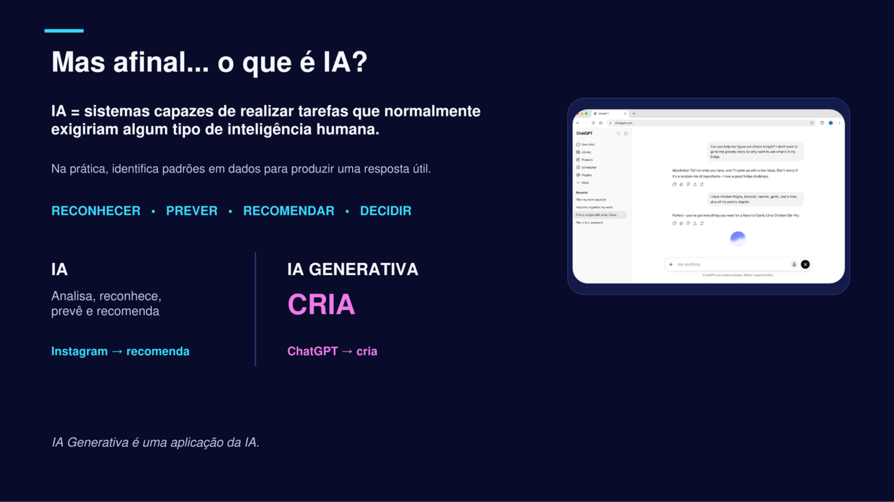
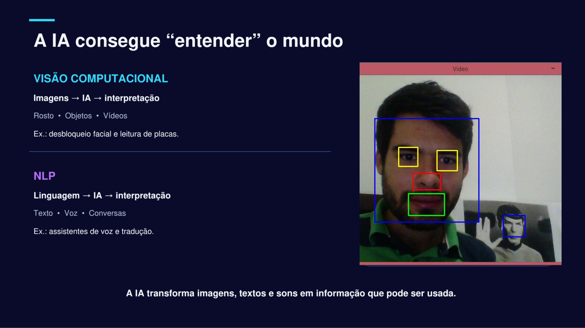
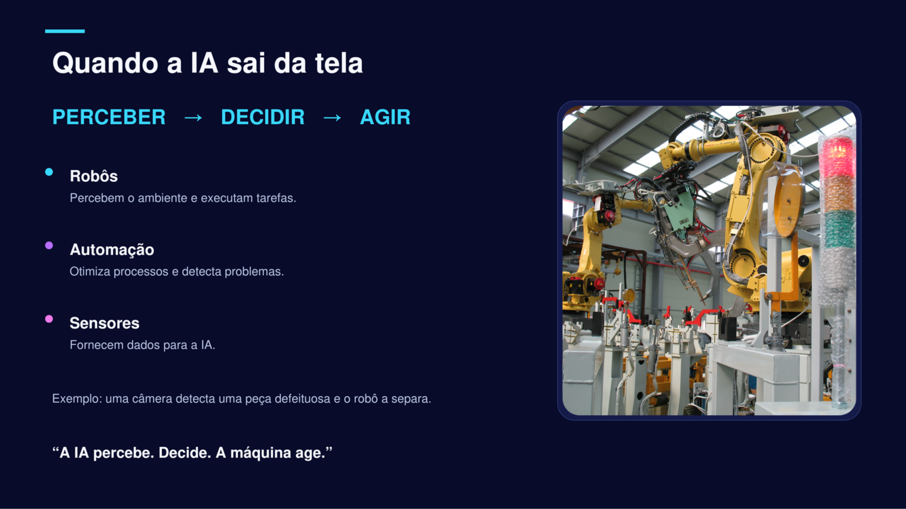
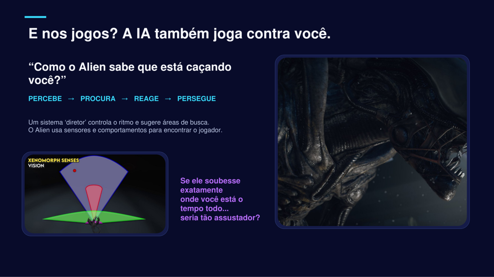
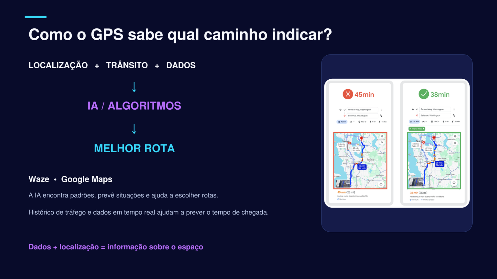
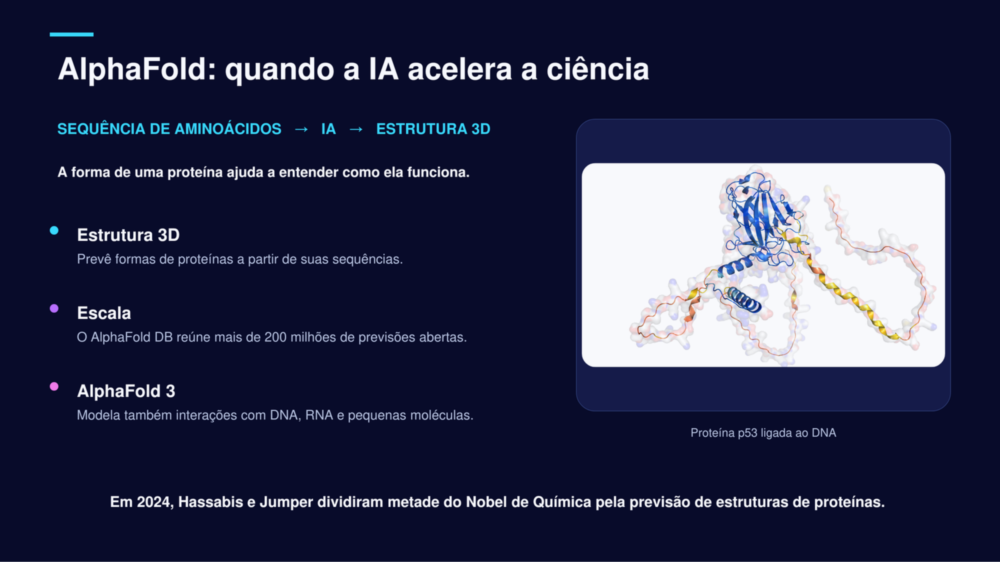
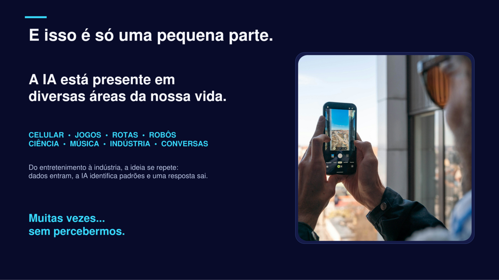
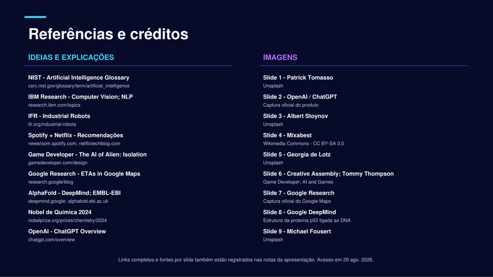

0
Acessos à página
Grade de Slides
Slide 01 — Capa

Slide 02 — Introdução

Slide 03 — Visão Computacional

Slide 04 — Modelos de Linguagem
Slide 05 — IA na Saúde

Slide 06 — Sistemas Inteligentes

Slide 07 — Impacto Tecnológico

Slide 08 — Casos Práticos

Slide 09 — Desafios & Ética

Slide 10 — Conclusão
Pôster Científico Institucional (Versão Impressa)